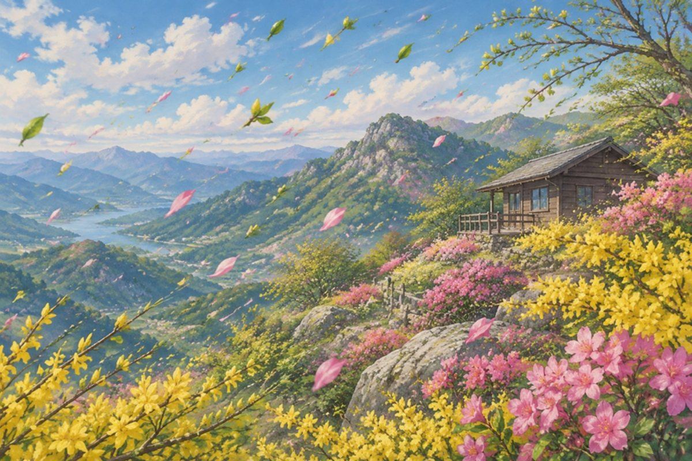
봄 바람
봄 바람
거센 바람
봄을 몰고 오는 바람
착한 바람
기꺼이 맞으리
2012년 4월 3일(수) 광은기도원에서 적어 보았다.
이 시집에는 이재선 목사가 2011년과 2012년에 쓴 자연시 21편을 담았습니다.
동산교회 수지수양관과 광은기도원에서 기도하고 산책하며 만난 나무와 바람, 매미와 낙엽을 적은 시들입니다.
시마다 끝에 언제 어디서 썼는지를 적은 지은이의 메모를 그대로 두었고, 계절을 따라 봄·여름·가을·겨울로 나누었습니다.
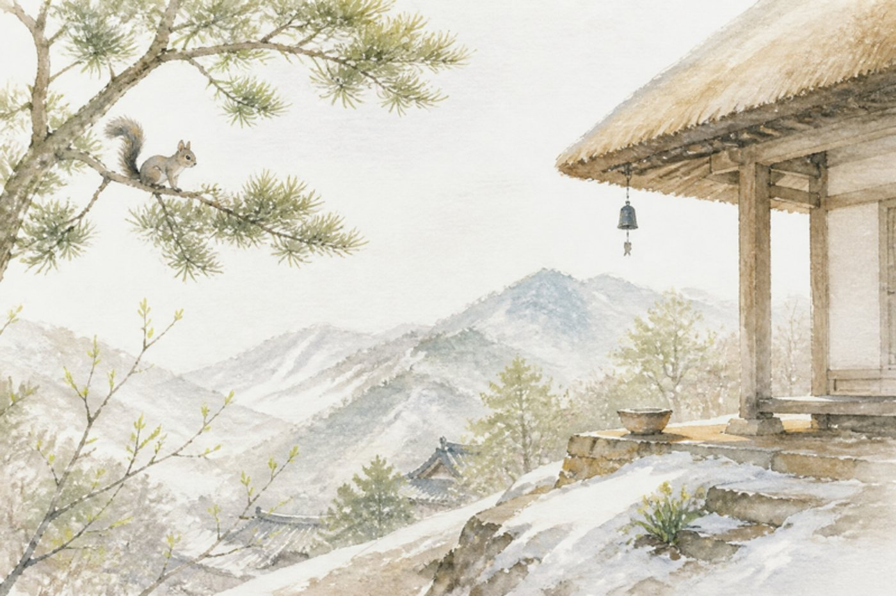

봄 바람
거센 바람
봄을 몰고 오는 바람
착한 바람
기꺼이 맞으리
2012년 4월 3일(수) 광은기도원에서 적어 보았다.
해가지면 어두워집니다
해가 넘어가면 캄캄해집니다
주님이 떠나시면 절망이 드리웁니다
주님이 안 계시면 낙망이 나를 삼킵니다.
주님은 해입니다
주님은 빛이십니다
주님은 소망입니다
주님은 내 삶의 해입니다
2012년 5월 3일 광은 기도원에서 저녁 해가 기우는 노을을 보며 적어보았다.
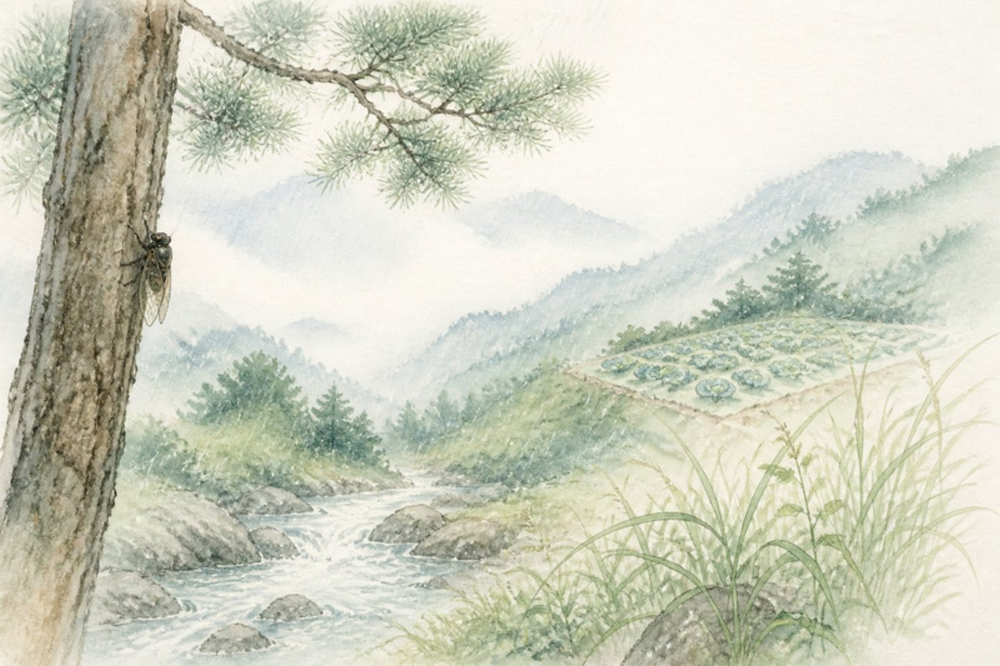
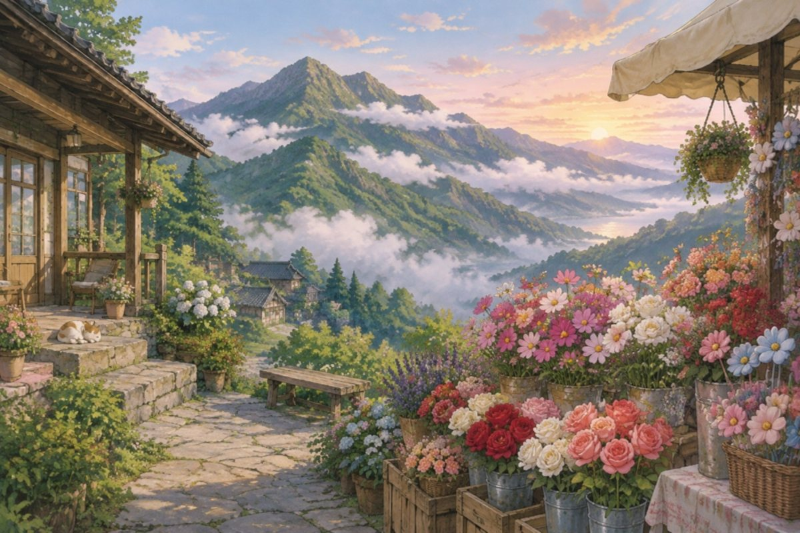
참 아름답다
필그림 하우스의 새벽 풍경
높은 산
걸친 구름
밑 밭침의 구불구불 논두렁
드문드문 자리 차지한 집 이 빠진듯
풍광 가로막는 대자로 눈 잣나무
참 아름답다
이 모든 것이 얽혀 있으니 아름답다.
그에 질세라 뭐 그리 바쁜지
경운기의 새벽 적막을 깨는 소리조차
참 아름답다
왜 몰랐던가
조화로 아름다움이 완성되는 교회
별별 사람 모인 곳
크고 작은 소리의 어울림
긍정과 부정의 주장
주의 뜻을 이루네
2011년 6월 13일(월)
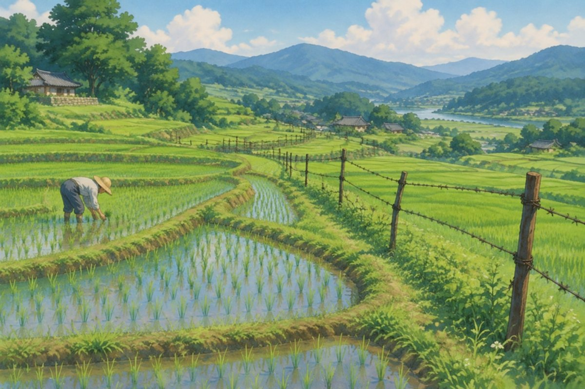
구불 구불 논 두렁 곡선이 아름답다.
피카소가 그려도 이렇게 아름답게 그릴 수 있을까?
추상화 속 형이상학적으로 나눈 면마다
농부들 허리 구푸려 심어 논 푸른 모들이 채웠네
멀리 보면 아무연고 없지만
부지런한 농부
이논 저논 자상히도 살피누나
이 아름다운 화폭 속의 이방인
앗!
웬 남북분단 상징하는 철조망인가?
시골 농부 아저씨 말 들으니
서울 것들이 땅을 사면 죄다들 저런다나
논과 철조망 무슨 부조화인가?
내 땅이니 남 못 들어 오게 했건만
지가 못 나가게 된 꼴이네
남들이 말한다.
“넌 여기서 나오지 마!”
2011년 6월 13일(월)
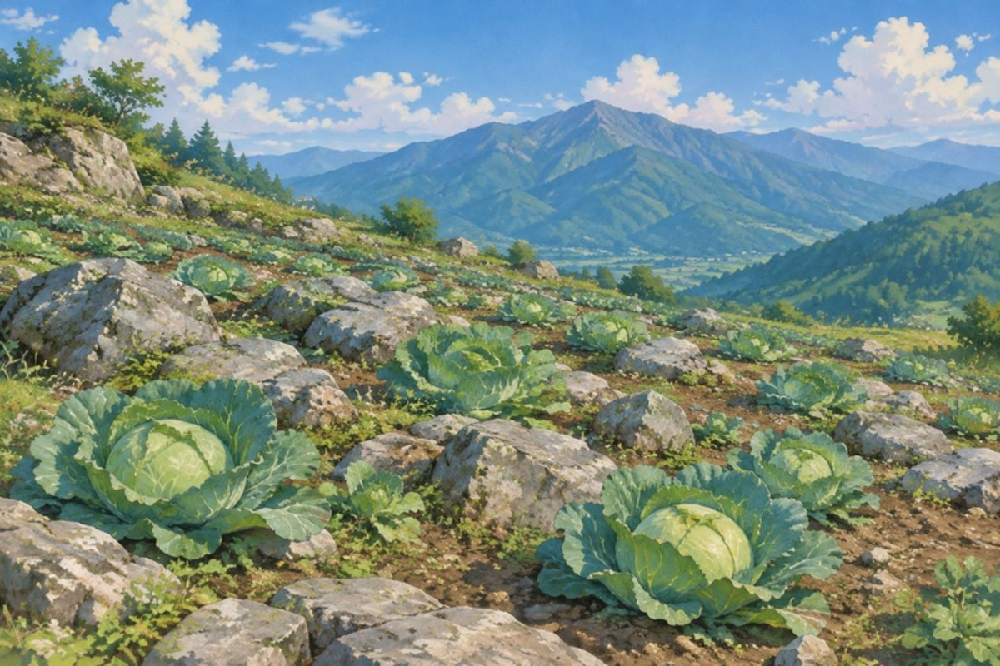
강원도 밭은
돌작 밭
돌 반, 흙 반
강원도 밭은
급경사 밭
등산 하듯 김을 매야 하는 급경사 밭
강원도 밭은
고랭지
한 여름에도 조석 공기
한기가 서리네
그래도 강원도 밭은
고랭지 배추로 유명한 밭
돌작 밭, 급경사 밭, 고랭지에서도
일급 배추 일구듯
어떤 열악한 상황에서도
영혼의 열매 일구네
2011년 6월 18일(토)
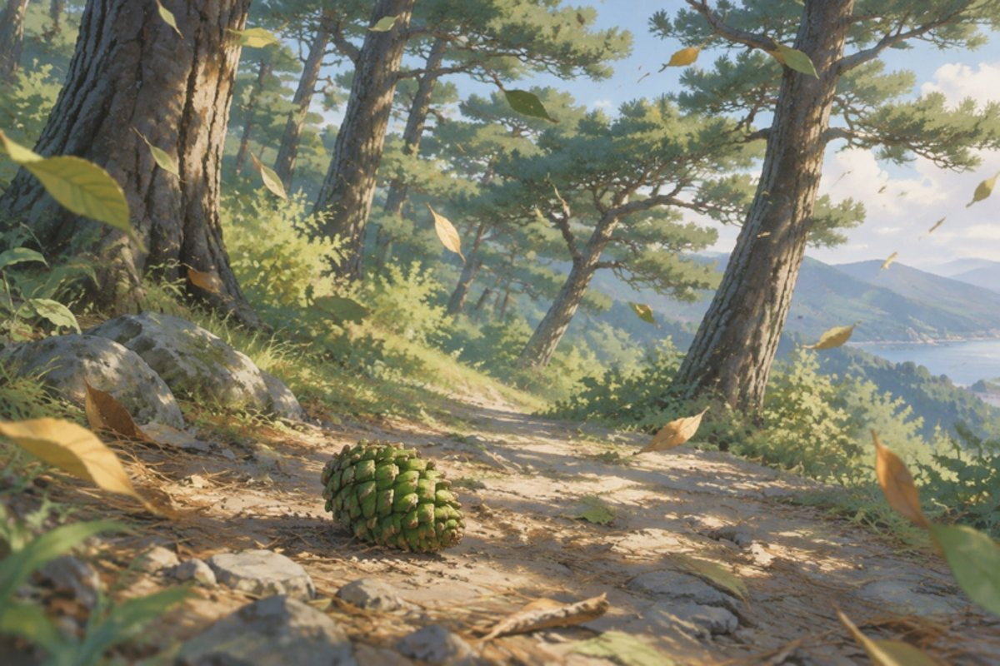
센 바람에 떨어진 잣 한 송이
넌 왜 떨어졌니?
바람이 너무 셌구나
열매 못 맺을 네 모습 안쓰럽구나
난 떨어지지 않으리
고난의 바람에도
비난의 바람에도
지연의 바람에도
절망의 바람에도
난 꼭 붙어 있으리
난 꼭 목회를 감당하리
반드시 역경의 열매 맺으리
2011년 6월 23일(목)
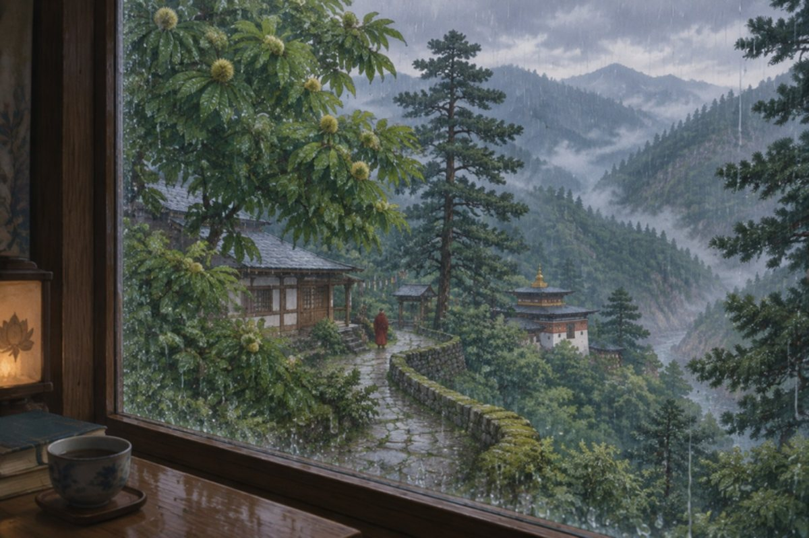
장마
하늘에서 장대비가 쏟아진다.
온 천지가 비를 맞는다.
소나무, 밤나무, 가시나무도
상추, 감자, 수수대도
바위, 돌, 흙도
온 대지가 비를 먹는다.
장마
사람들은 비를 피한다.
비 없이는 못사는 줄 알면서도
비만 피해 다닌다.
은혜의 비가 쏟아지는데
축복의 비를 비켜 다닌다.
사람아!
비를 맞으라!
비를 먹으라!
2011년 6월 23일(목)
광은 기도원에서 안식월을 보내며 장마비를 숙소에서 보며 적어 보았다.
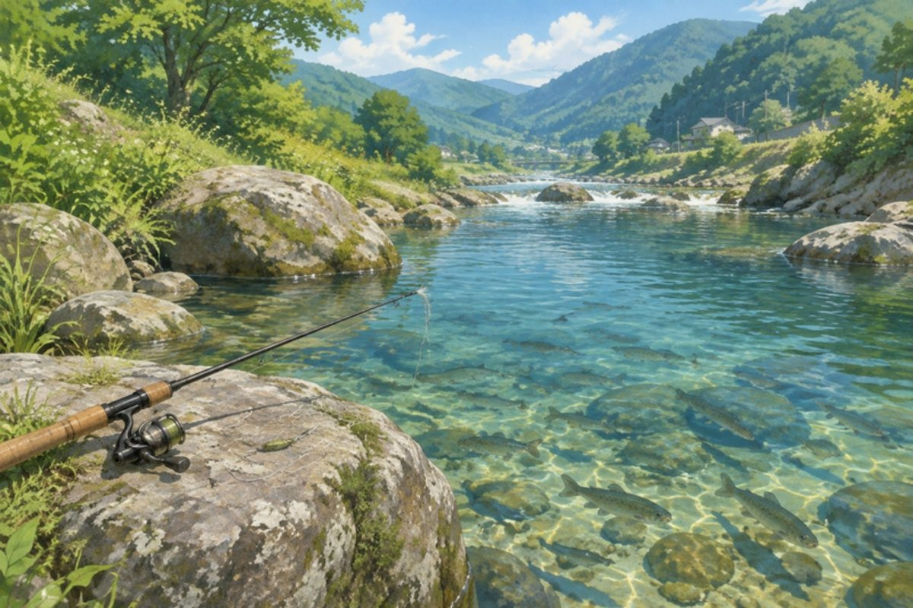
가평
아름다운 산하
계곡에 유수는 청명이고
게다가
고기 반 물 반이니 금상첨하라
혹시 잡아볼까
무슨 재주로
마침 낚시 대 있어
혹시 하고 들어보니
끊어진 낚시 줄
맑은 물에 고기 반 물 반이면 무슨 소용
끊어진 낚시 줄
세상 억만 영혼들
진리의 낚시 대 있으나
끊어진 낚시 줄
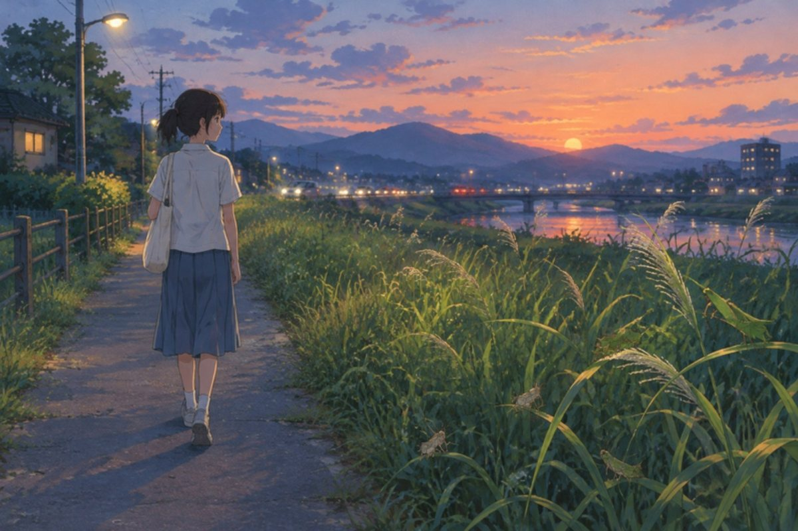
한 여름 풀벌레 소리
차 소리에 묻히네
힘찬 풀벌레 소리
밝은 빛에 덮이네
절규의 외침
왜 이리 시끄럽게 우노
귀찮은 듯 핀잔에 꺽이네
우리네 인생
한 여름 인생
한 여름 울다 지처 쓰러지네
울다 못해 절규를 해도
사람들 기억에서 지워지네
인생들 가슴에서 사라지네
아무리 외쳐도 한 여름 뿐이리
2011년 8월 8일(월)
집 앞 산책로 옆의 풀 속에서 아주 시끄럽게 울어대는 풀벌래 소리를 듣고 적었다.
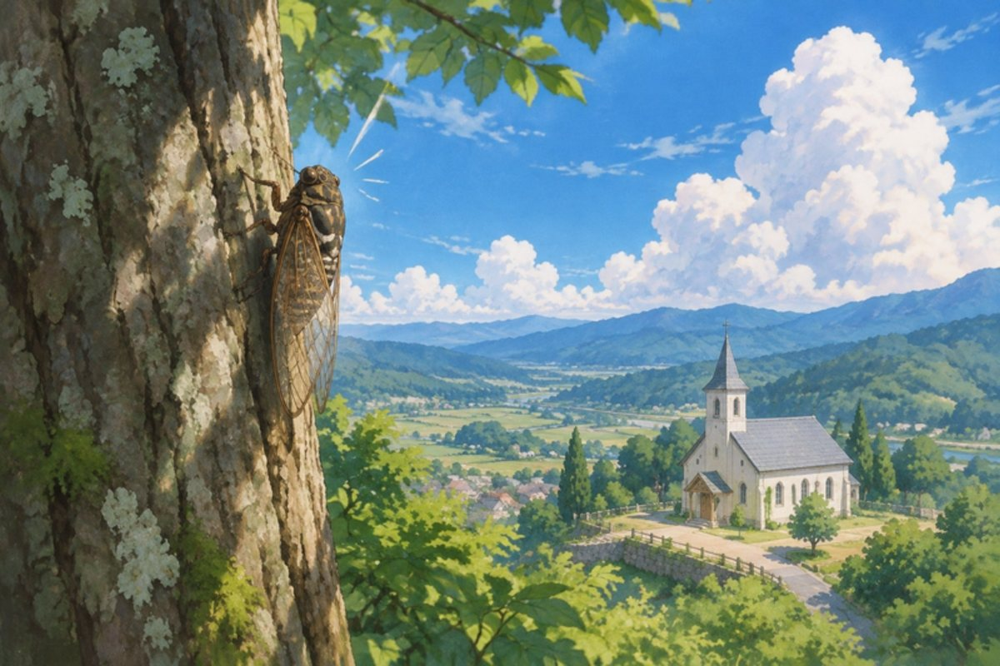
울보 매미
여름 내내
뭐 그리 슬픈지 울기만 하네
아파서 우나 기뻐서 우나
뜨거운 여름 힘들어 운다
조금만 참으면 가을이 오니 참으라고 운다
내 아픈 마음 알고 대신 울어준다
웃음보 매미
웃고 또 웃는다
7년 동안 묶인 몸 풀고
파란 날개짓
내 몸이 나르네
어디든 가네
매미의 웃음은 자유의 외침
매미가 운다
매미가 웃는다
울고 싶은 사람 매미가 운다 하고
웃고 있는 사람 웃는다 한다
나의 슬픔 위로하기 위해 운다
누리를 즐겁게 하기 위해 웃는다
매미 소리가 정겹다
어느새 나의 친구된 매미
2012년 8월 2일(목) 광은기도원에서 적어 보았다. 건축으로 인해 6월 이후 중단되 시를 입당 1차 마무리 후 처음 적어 본다.
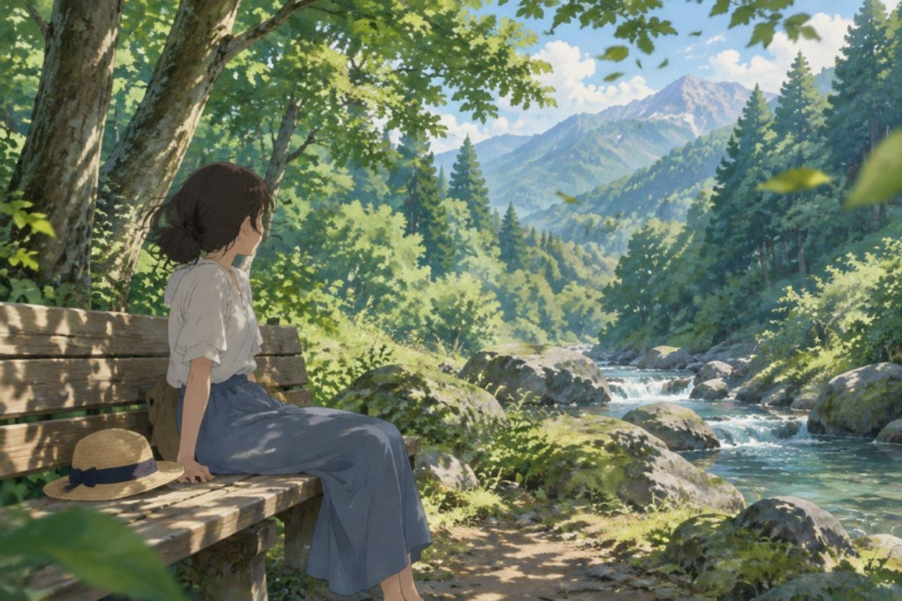
찜통 더위
앉아만 있어도 땀 줄줄줄
산 속 바람
끈적 땀 씻어가네
시원 산 바람
신선한 비움
복잡한 마음 씻어주는 청량제
내 영혼 맑히네
산 바람 되고파
진득이 같은 근심
거머리 같은 걱정
다 떼어가는 솔향기 바람
2012년 8월 2일(목)산 속에서 더위를 피하여 산바람을 쐬면서 성도들의 근심, 걱정을 씻어내는 청량제 같은 목사가 되고 싶어 적어 보았다.
휘영청 보름 달 풍만키도 하여라
붉은 달 빛 가린 솔 얄밉도다
붉은 빛 달 손바닥으로 가릴 수 있다니
참 아쉽기도 하여라
우주의 오묘함이 손바닥 편견으로 막다니
하늘 사랑비 우산 하나 펴 비껴가게 하니
하나님의 큰 사랑 동전 하나로 눈 가리고
주님의 광대하심 손톱 하나로 귀 막으니
달 가린 솔
이젠 살며시 등 뒤로 손
하나님 가린 손
이젠 겸손히 양 무릎에 내려보렴
2012년 8월 3일(금) 밤 하늘에 달을 기리고 있는 솔을 보며 우리가 하나님의 큰 능력을 우리의 작은 손으로 가리고 있는 모습을 보는 듯해서 적어 보았다.
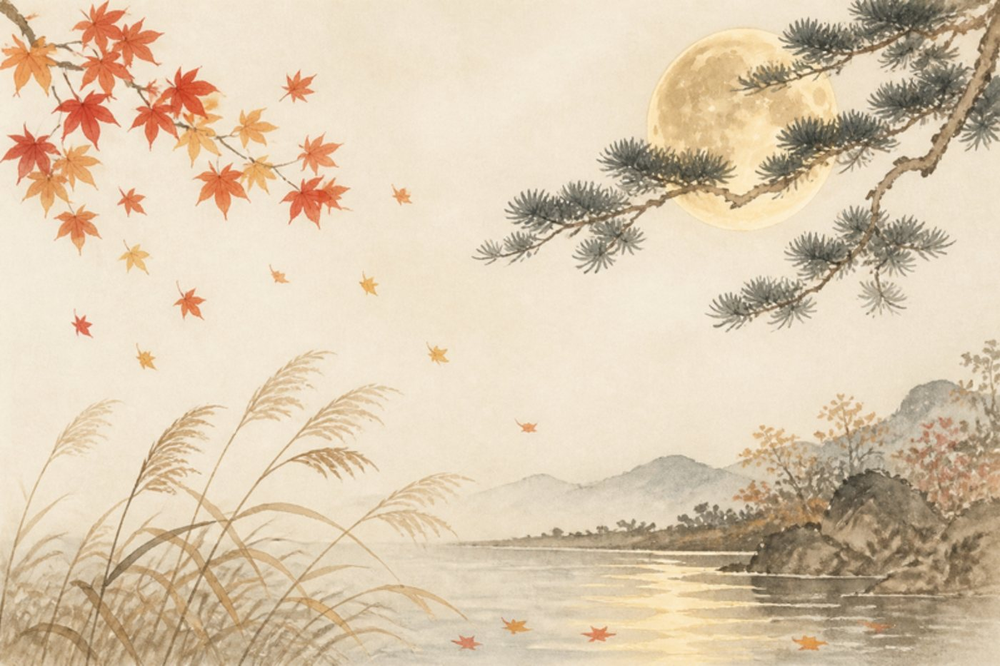
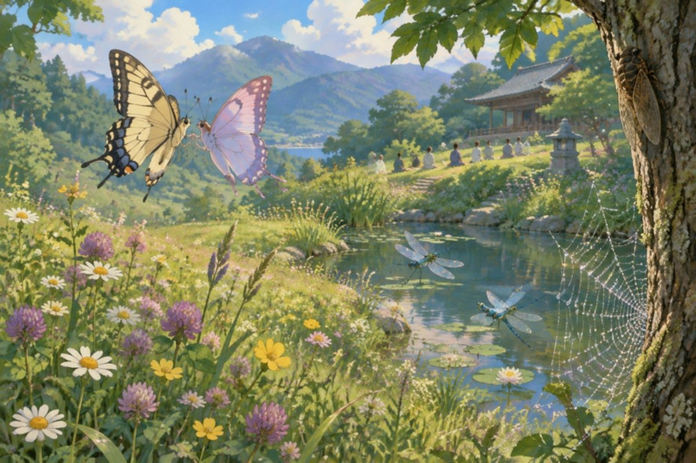
나비는 팔랑팔랑 춤추는 사랑
잠자리 송긋송긋 물장구 사랑
매미는 매엠매엠 테너의 오페라 사랑
거미는 숨죽이는 애달픈 사랑
은행나무 사랑의 열매를 맺고
민들레의 사랑의 꽃씨 비행
접시꽃 당신을 부르고
나팔꽃이 사랑의 나팔을 분다
유치원생 좋아좋아 사랑
초등생 변덕 사랑
중고생 못 말리는 사랑
청년의 때 불나방 사랑
장년의 때 친구 같이 편한 사랑
노년의 때 돌보미 사랑
세상은 온통 사랑으로 가득해
사랑의 도가니 세상은 아름다워라
2011년 9월 1일(목)
동산교회 수지 수양관에 기도하러 갔다가 나비 두 마리가 서로 사랑하는 것처럼 붙어서 날아다니는 모습을 보면서 세상의 생명체들은 모두 사랑을 하고 있는 것을 깨닫고 지어 보았다.
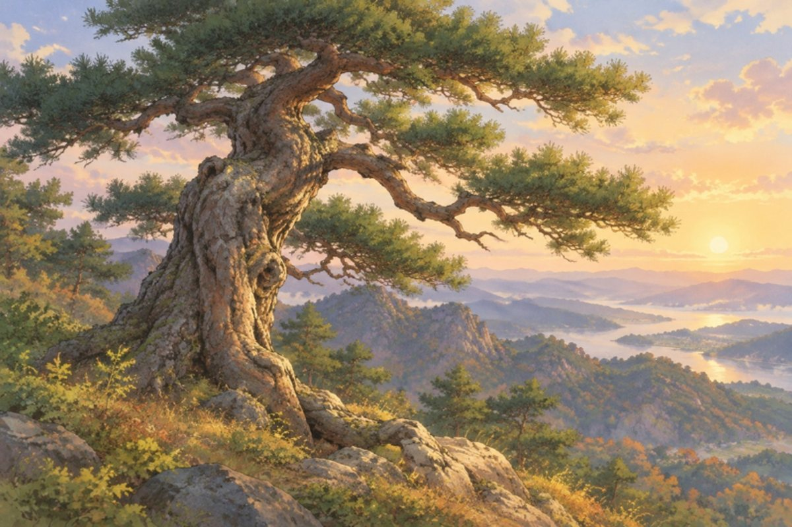
줄기는 울퉁불퉁
가지는 꼬불꼬불
잎은 삐쭉빼쭉
모나고 모난 소나무
출생은 불행
인생은 험난
삶은 상처
눌리고 찢긴 인생
울퉁불퉁, 꼬불꼬불, 삐쭉빼쭉 소나무
멀리 보니 아름다워라
불행, 험난, 상처 투성이 인생
되돌아 보니 그림 같은 인생
2011년 9월 8일(목)
동산교회 수지 수양관에 기도하러 갔다가 소나무를 보고 힘든 인생 사는 성도를 생각하며 지어 보았다.
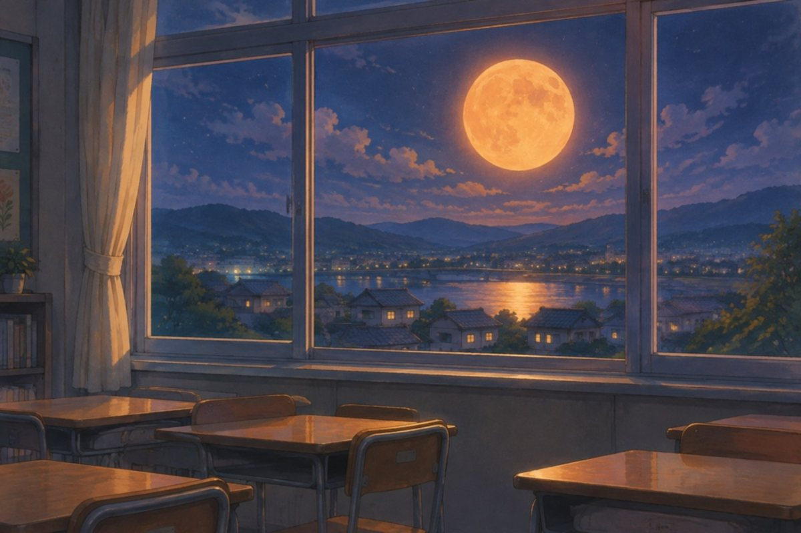
한가위 달
휘영청 밝으니 소망이 밝아오네
소망의 달
보름달
크고 둥그러니
내 마음도 커지네
꿈의 달
붉은 달
노오랗게 불타오르는 달
정열의 달
소망의 달
꿈의 달
정열의 달
가슴 속에 품고
인생을 불태운다
2011년 9월 15일(목)
2011년 9월 16일(목) 추석을 사흘 지난 날 제자대학 강의 중 창 밖으로 비친 보름달의 보면서 소망을 품게 되면서 쓰다.
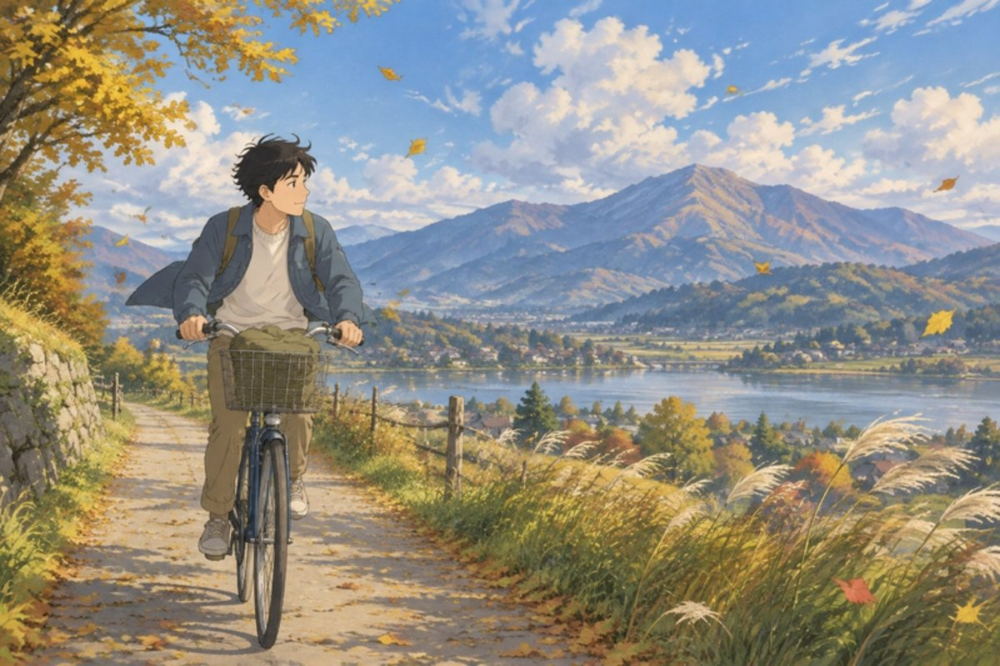
시린 손 녹여주는
봄날의 따스한 바람
송글송글 땀 씻어주는
여름 산 정상의 바람
눌린 가슴 문 열어주는
해변의 바다 바람
울적한 마음 달래주는
산 속 솔바람
냉가슴 총각 설레게 하는
여인의 숨 바람
아름다운 바람
행복한 바람
사랑스런 바람
바람과 함께
바람 속에 젖어 살리
2011년 9월 26일(월)
2011년 9월 26일(월) 산책 나가서 자전거를 타면서 얼굴에 스치는 바람을 맞으며 바람의 다양함과 그 아름다움이 문득 느껴졌다.
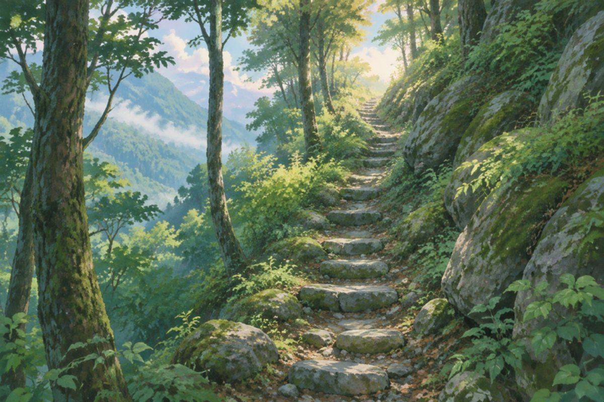
깊은 산 속 좁은 길
인적 없는 외딴 길
아무도 갈 것 같지 않은 길
가지런히 놓인 돌계단
반가운 돌계단
스미는 배려심
설악산 케이블카도 고맙지만
깊은 산 속 돌계단도 못지 않으리
2011년 9월 29일(목)
동산교회 수지수양관 뒷 산에 오르다가 아주 작은 계단을 보면서 적어 보았다.
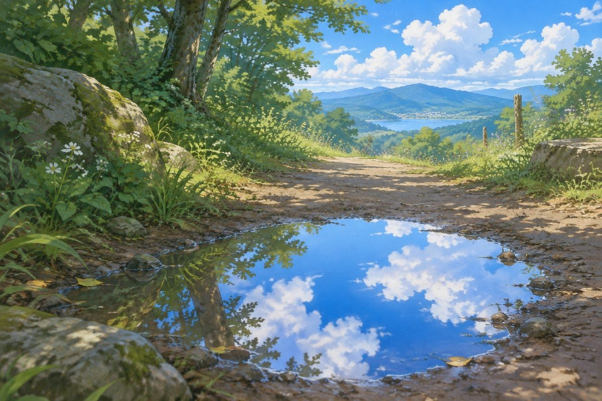
하늘 보면 시원
하늘 날면 꿈결
하늘을 담을 순 없을까
큰 하늘 못 담으리
물이 되면 담으리
거울이 되면 담으리
하늘은 담는게 아니라
하늘이 되는 것이리
나 하늘처럼
그대에게
시원 꿈결 되리
2011년 9월 29일(목)
동산교회 수지 수양관에 산책하다가 고인 물에 비친 하늘을 보면서 적어 보았다.
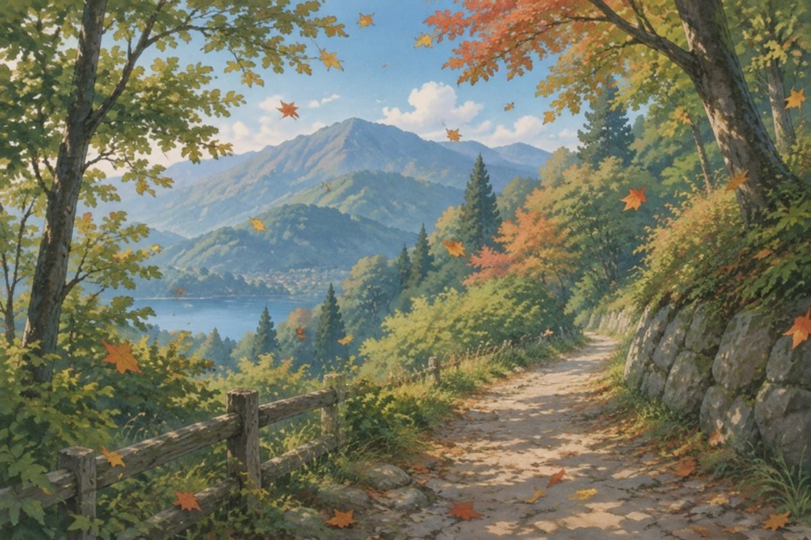
9월 초순
벌써 가을 냄새가 난다
한 나라의 수절을 위해 삼천궁녀가 하늘을 갈랐다
겨울의 비바람의 칼바람을 면키 위해
나뭇잎들이 삼천궁녀가 되어 가을 냇가에 곤두박질치고 있다
첫 입수 궁녀 겁나듯 여름 열기 가시기도 전 뛰어 내렸네
용감한 나뭇잎 녀석들
너희는 나무들의 특공대
나무를 지키는 자폭 특공대
사람은 추위를 견뎌내기 위해 옷을 끼어 입는다
나무는 겨울을 준비하기 위해 화려한 잎을 떨군다
2012년 9월 13일(수)광은기도원에서 첫 낙옆이 떨어지는 모습을 보면서 적어 보았다.
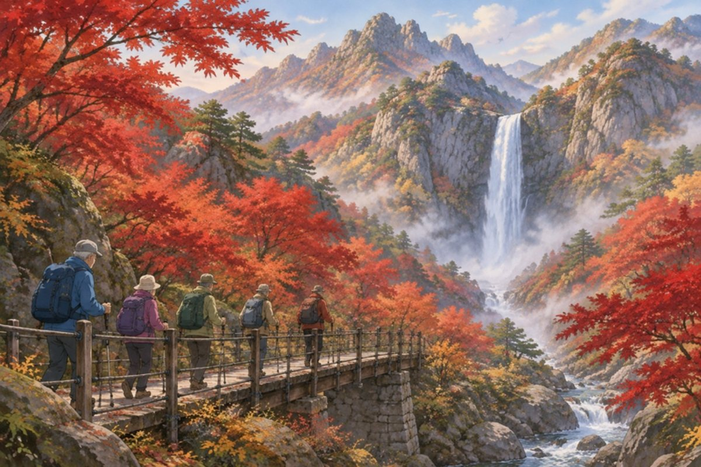
하늘 비 내려 모이고
맑은 물 쌓여 물골
골짝 물 모여 폭포 되고 흩어 안개
물 비 제각기 달아나 구름 비 되어 얼굴 적시네
짙푸른 나뭇잎 모여 삼림(森林)
청춘 푸름 뽐내고
단풍 낙옆 되어 냇가 쌓였네
흘러가다 바위 걸려 한 줌 재되네
어디메서 그리 왔노
한 소설 쓸 사람 사람들
구름다리 포개포개 한 몸 이루더니
갔던 길 이내 되돌아
어느새 따스한 내 집
모이고 쌓이고 흩어지는 인생
부는 바람에 흩날릴 준비 되었느뇨.
2012년 11월 6일(화) 새암교회 어르신들과 전북 강천산에 등산하면서 적어 보았다.
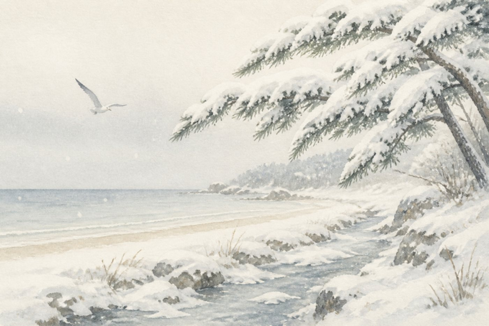
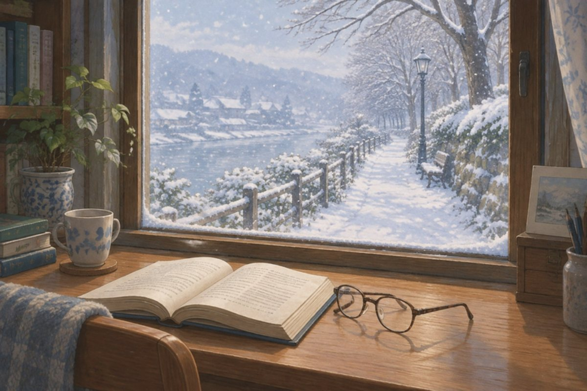
과한 문자 탐독
사막 같이 메마른 눈
산소 비 얹기 위해
삼킨 글 소화 위해
문을 나서니
비누 방울 눈 송이들
바람 미끄럼을 탄다
버스 정류장에 서서
기다려도 오지 않고
눈 이불 드넓은 대지 내려 앉고
포그니 덮는다
정류장을 뒤로 하고
흰 비둘기 내 머리에 앉고
걸으며 생각의 보자기 매듭을 풀어 보니
버스를 기다렸나? 눈을 기다렸나?
무엇을 기다리는 줄 모르고
왜 기다리는 줄도 모르며
기다리는 줄도 모르니
이미 왔는데
아니 지나 갔는데
눈을 기다렸고
눈은 왔다
2012년 1월 24일(화)
눈오는 날 책을 읽다가 눈도 아프고, 바람도 쐴 겸 산책을 나갔다가 내 삶이 무엇을 기다리는 줄 잘 모름을 깨닫고 적어 보았다.
© 이재선 · 새암교회(경기도 용인시 수지구 고기로 165). 그림: 캔바 AI로 그린 그림. 무단 전재를 삼가 주세요.